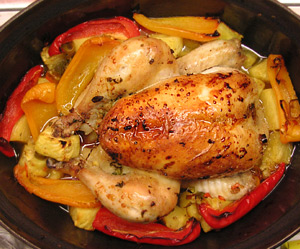

Brathähnchen mit süsssauer Sauce
5 von 6Den Backofen auf 190°C vorheizen.
Das Huhn innen und außen großzügig mit Salz und Pfeffer einreiben.
Den Ingwer mit Schale reiben. Die Petersilie grob hacken.
Ingwer und Petersilie mischen und das Hühnchen damit füllen.
Die Paprika, Zwiebeln, Chilischoten und Ananas in eine Kasserolle geben. Den zerdrückten Fenchelsamen, Salz und Pfeffer und 3 Spritzer Olivenöl dazugeben. Kräftig durchmischen.
Das Hähnchen oben drauf legen und mit etwas Olivenöl bestreichen.
Für ca. 90 Min. auf der mittleren Schiene braten.
Wenn das Hühnchen gar ist, dieses mit der Hälfte der Gemüse-Ananas-Mischung warm stellen.
Den Rest mit dem Zucker, Essig (hier bin ich immer vorsichtig und nehme erstmal nur 2-3EL)und etwas Salz mit dem Mixstab pürieren. Abschmecken und bei Bedarf noch etwas Salz, Pfeffer und Essig zufügen.
Zusammen mit dem zerteilten Hühnchen und dem Gemüse servieren.
Als Beilage schmeckt Reis sehr gut. Wir nehmen aber meistens nur frisches Brot, da die Sauce sooo lecker ist und wir das Brot darin tunken.
Wenn man die Haut knusprig haben möchte, sollte man das Huhn nach dem Zerteilen nochmal für ein paar Min. in den heißen Ofen legen.
